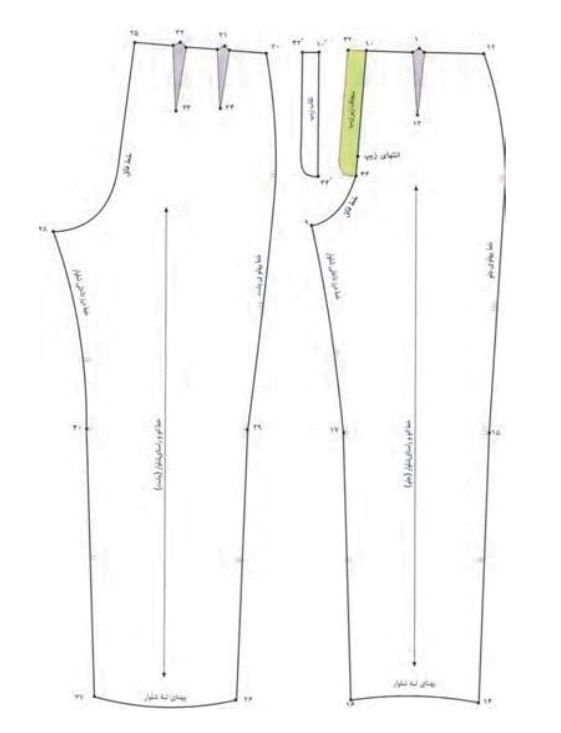

الگو شلوار متریک
مرحله اول رسم مستطیل اولیه یک مستطیل میکشیم به طول قد شلوار و عرض نصف دور باسن + 2 سانت برای گشادی این مستطیل، پایهی الگو است. مرحله دوم تعیین خطوط فاق از بالا، خط فاق جلو را قد فاق جلو پایین میاوریم و خط فاق عقب را قد فاق عقب پایین میاوریم این خطوط برای رسم فرم فاق شلوار لازم است. مرحله سوم رسم فاق جلو و عقب، فاق جلو: از خط کمر، کمی به سمت داخل 1–2 سانت منحنی به سمت خط فاق پایین میدیم. فاق عقب: منحنی بزرگتر از جلو، کمی به سمت بیرون.
مرحله چهارم پهنای کمر، در بالای مستطیل، نصف دور کمر + 2 سانت گشادی علامت میزنیم. خط کمر را رسم میکنیم و وسط جلو را کمی فرو میبریم. مرحله پنجم پهنای ران، در خط باسن، نصف دور باسن + 2 سانت برای راحتی. منحنی را از کمر تا باسن رسم میکنیم. مرحله ششم خط زانو، از بالای الگو به پایین اندازه میگیریم تا محل زانو. نیمعرض زانو = (دور زانو ÷ 2) + 1–2 سانت گشادی. خط زانو را رسم میکنیم.
مرحله هفتم پهنای مچ، پایین شلوار، نیمعرض مچ = (دور مچ ÷ 2) + گشادی. خط مچ را رسم میکنیم و منحنی نرم از زانو تا مچ وصل میکنیم. مرحله هشتم اصلاح و منحنیها، منحنیها را با خط صاف یا منحنی نرم نرم میکنیم، از کمر تا باسن از باسن تا زانو از زانو تا مچ. مرحله نهم علامتگذاری و آمادهسازی برش، خط وسط جلو و عقب، فاق، و خط برش را با اعداد یا حروف شمارهگذاری میکنیم. اضافهی درز ۱–۲ سانت در تمام لبهها میگذاریم حالا الگو آماده برش است.
